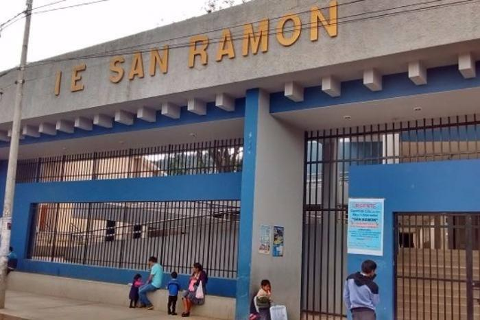

| datos | ||
|---|---|---|
| Personas | hombre | mujer |
| Abuelos | Julio Galan Llanos | Maria Mosqueira Huatay |
| Padres | Reynaldo culqui Mendoza | Maria Galán Mosqueira |
| Hermanos | Segundo Culqui Galán |
|
Formación Académica

PRIMARIA
Escuela estatal "RAFAEL OLASCOGA" gran escuela con mucho prestigio, gane grandes amigos y muchos compañeros, que en la actualidad son excelentes personas y una maestra que siempre nos tubo en su mente y corazón, que gracias a sus consejos seguimos incursionando el tema educativo.

SECUNDARIA
Colégio "RAFAEL LOAYZA" me albergó durante los dos primeros años, reconocido por sus grandes estudiantes técnicos, ya que cuenta con talleres para la formación de sus alumnos, gran colegio.
Colegio "SAN RAMON DE CAJAMARCA" un orgullo de colegio, fue donde termine mi secundaria, se merece más que un reconocimiento por sus grandes logros y por ayudar a sus alumnos a sobresalir con el conocimiento brindado. NO OLVIDAR NO OLVIDAR SAN RAMON.
UNIVERSITARIA
Universidad "UNIVERSISDAD NACIONAL DE CAJAMARCA" Alma mater de nuestra ciudad la mas grande de la sierra norte del Perú-cajamarca , en la cual estoy estudiando para lograr un futuro prometedor.